Everything Bagels | Baked | Vegan | Gluten-Free | Yeast-Free | Nut-Free
Bread-like items, including bagels, are typically written off as being full of “bad” carbs and empty calories, and are “stripped” of nutrients. Well, the BUCK STOPS HERE! I don’t believe in making food that fits any of the above descriptors. My site is unconventional when it comes to the construction of recipes. I aim to use ONLY healthy ingredients that are loaded with nutrients so we can avoid empty calories and bad carbs. These bagels are gluten-free, vegan, nut-free, oil-free, and yeast-free, BUT if you are missing the experience of a bagel, I assure you, these won’t disappoint.
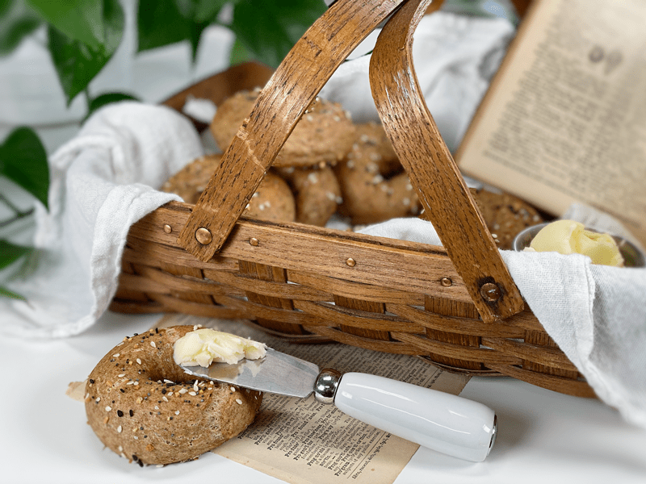
What You Can Expect From This Recipe
I never post a recipe that Bob and I find mediocre. That would be disappointing and a waste of time for all involved. So when I say that these bagels are delicious and nutritious, I am not pulling your leg, arm, or hair. If you are a bagel lover, you know that one of their characteristics is a really chewy bite, which is a result of using high-gluten flour. My bagels have a bit of a chew to them, but I couldn’t match it 1:1 since I don’t use gluten-containing products.
These bagels have a gorgeous golden crust, a light chewy interior, and a flavorful topping that keeps you wanting more. They are very filling, so don’t let their size fool you. Good things truly do come in small packages. You can enjoy these right out of the oven, tearing off bite after bite, or if you have patience, allow them to cool enough to cut so you can create an open-face sandwich with your favorite fillings.
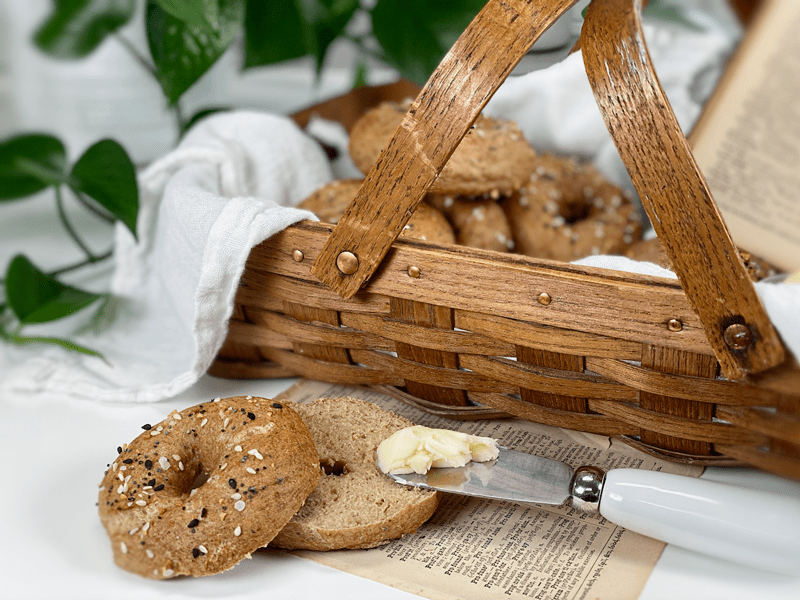
After kneading the dough it is shaped into a ring, dropped in hot boiling water, and then the bagels end their journey in a hot oven. Well, I guess the real fairy-tale ending is them landing in our stomachs! The end product is chewy as a whole and denser than a “regular” loaf of bread. Bagels don’t have a very crusty crust; instead, it is more on the chewy side. And for those of you who have made traditional bagels in the past, these don’t require proofing. Bagels that use yeast need some time to proof, but since there isn’t really anything typical about this recipe, no proofing is required.
Do I Have to Boil the Bagels?
Skipping the boiling process just makes a “regular” bread–good bread, mind you, but why lose that characteristic bagel texture that we want? Boiling bagels effectively sets the crust before it goes in the oven. The water doesn’t actually penetrate very far into the bread, because the starch on the exterior quickly gels and forms a barrier. These bagels are boiled for a total of 60 seconds, and during this process they are quite active–rolling, tossing, and flipping themselves over. I found myself mesmerized by watching them, but then, it doesn’t take much to entertain me.
The boiling action also creates a darker crust, which I find more attractive. I did a test (photo toward the end of the post) where I baked two bagels, one boiled (the darker one) and the other not (the light-colored one). If you were to follow a typical bagel recipe that uses gluten and yeast, you would find a difference in boiling and baking times and higher baking temperatures. Remember, I am using unconventional ingredients in these bagels to fit our dietary needs. Therefore, I had to make adjustments to the recipe that worked with the chemistry of the ingredients I used.
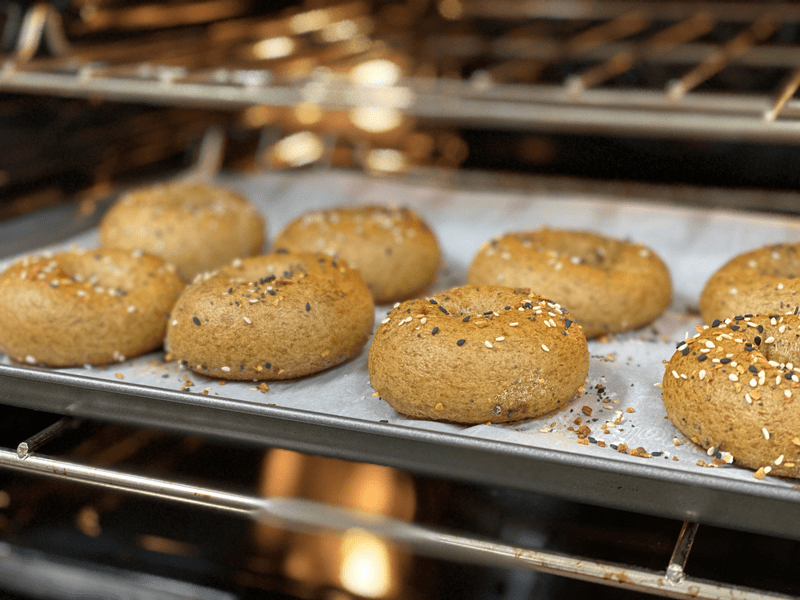
Ingredients Used and Why
Gluten-Free Rolled Oats
- Health — The nutrient composition of oats is well-balanced. They are a good source of carbs and fiber, including the powerful fiber beta-glucan. They also contain more protein and fat than most grains.
- Science — Oats help to prevent starch degradation, have a higher water retention capacity, and help to increase the shelf life of baked products (slower staling).
Sorghum Flour
- Health — Sorghum is a nutrient-packed grain. It’s rich in B vitamins, magnesium, potassium, phosphorus, iron, and zinc. It’s also an excellent source of fiber, antioxidants, and protein. Sorghum flour is a gluten-free food, so it is a safe alternative to flour for those with celiac disease. The starch and protein in sorghum take longer than other similar products to digest. This slow digestion results in a very low glycemic index, which is particularly helpful for those with diabetes.
- Science — Sorghum flour increases the composite of the bread structure: cohesiveness, springiness, and chewiness.
Buckwheat Kernels (Ground to Flour)
- Health — Buckwheat is rich in fiber, which helps to keep food moving smoothly through the digestive tract and may help you feel fuller longer
- Science — Buckwheat flour contains levels of starch and protein that are similar to wheat flour. Buckwheat flour contains 70–91% starch, which contributes to the formation of dough; it is responsible for the setting of the crumb during baking and helps to reduce staling of the bread.
Arrowroot Powder/Flour
- Health — Arrowroot is gluten-free, is a B-vitamin powerhouse, and supports healthy digestion. If you have been reading through this post, you can see that digestion is big on my list.
- Science — Arrowroot is a starch. It plays a role in the browning of the bagels, adds structure, and helps to create the bread-like texture that we are used to.
Psyllium Husks
- Health — Psyllium seed husks are one of nature’s most absorbent fibers–they can absorb over ten times their weight in water. As psyllium thickens when liquid is added, it is known to help get things moving in the digestion area. So, If you are eating recipes that contain these husks, please be sure to drink plenty of water throughout the day.
- Science — Psyllium husks are added to give the bagels a bread-like texture. It is added to retain moisture and it works a bit like gluten does in traditional baking, making it possible to handle the dough when rolling or shaping it.
If the length of this post or the instructions seem a bit overwhelming, take a deep breath, and be assured that these bagels are actually very easy to make. My site is about teaching; therefore, I take the time to really lay out ALL the details, allowing me to set you up for success. May your days and bagels be blessed! amie sue
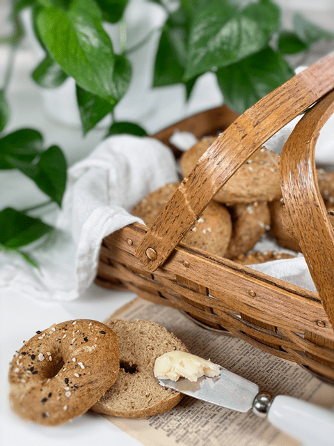
Ingredients
Yields 11 small bagels
Boiling Solution
- 8 cups water
- 1 Tbsp baking soda
Preparation
Psyllium Gel
- Quickly whisk the water and psyllium husks in a mixing bowl. It will instantly start to gel, which is to be expected. Set aside while you prepare the remaining ingredients, so it can thicken.
- Preheat the oven to 350 degrees (F).
- Line a baking sheet with parchment paper, sprinkled with a little extra flour.
Dry Ingredients
- In the mixing bowl that we are going to knead the bread in, whisk together the oat flour, sorghum flour, buckwheat flour, arrowroot, baking soda, baking powder, and salt.
- Since we are using whole rolled oats and buckwheat, you can grind them down together in a blender or food processor.
- If you have a sifter, use that to thoroughly incorporate all the dry ingredients.
Mixing the Dough
- Add the psyllium gel and drizzle the honey around the bowl.
- Using either a hand mixer or a free-standing mixer with a dough attachment, knead for 5 minutes (set a timer on your phone) to ensure that it gets kneaded enough (don’t we all love feeling needed?).
- Start the mixer on low until the flour is folded in, then turn it up one speed. If you start off at too high a speed, the flour will jump out of the bowl. If the dough feels too wet, add a tablespoon of arrowroot, and if it feels too dry, add a tablespoon of water.
- You can do this by hand, but plan on kneading the dough for up to 10 minutes.
Shaping the Bagels
- If you want to make equal-sized bagels, use a scale to weigh out 75 grams of dough.
- Roll each portion into a ball, then between the palms, roll it into a 6″ log. Bring the ends to and gently massage them together to create a circle
- The dough can be a little sticky, so have a little extra flour standing by to pat onto your palms.
Boiling the Bagels
- Pour 8 cups of water into a pot. Stir in 1 Tbsp of baking soda. Bring to a boil, then reduce the temperature to create a gentle rolling boil.
- Your pot size may vary, so the key is to have at least 4″ of water.
- Carefully lower each bagel into the simmering liquid, adding as many as will comfortably fit in the pot.
- Don’t overcrowd. I did 2-3 at a time. I used my spatula to poke at them to make sure they weren’t sticking to one another.
- Set a timer for 1 minute, and once done, remove with a slotted spoon. Tap the excess water from the bagel and place it on the parchment-lined baking sheet. Repeat until all the bagels have been boiled.
- Sprinkle the Everything Bagel topping on before sliding into the oven.
Baking the Bagels
- Bake on the center rack for 30 minutes.
- When done baking, slide onto a cooling rack and wait to cut until cool.
Storage & Shelf Life
- If you want to store them for up to a week, let them cool all the way, put them in a plastic bag, place them on the kitchen counter, and keep them away from heat and air.
- If you want to freeze them, slice them in half first, put them in a freezer-safe container, and freeze for up to 3 months. By freezing them already sliced, you can just stick them right into the toaster.
-
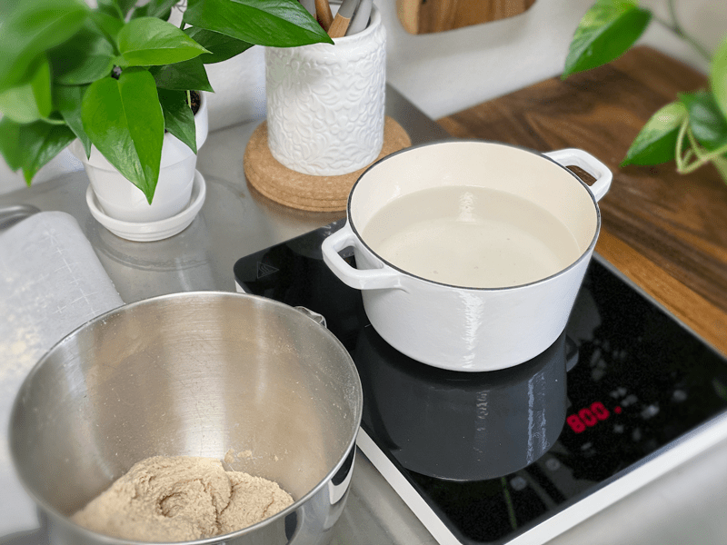
-
While you wait for the water to come to a boil, start shaping the dough.
-
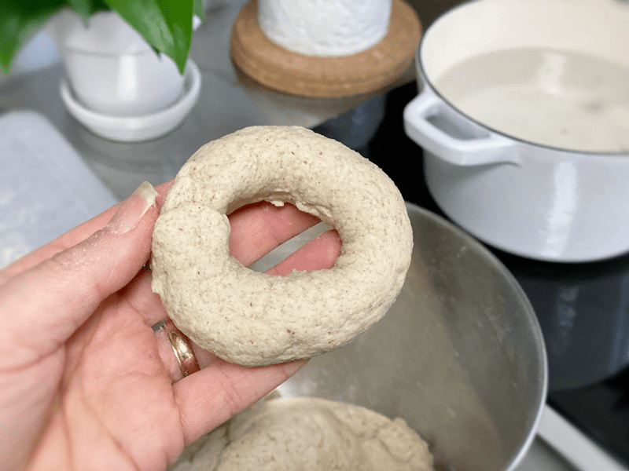
-
I used 75 g of dough to create a 6″ rope (rolling it in my hands). Pinch and squeeze the ends together so they don’t fall apart.
-
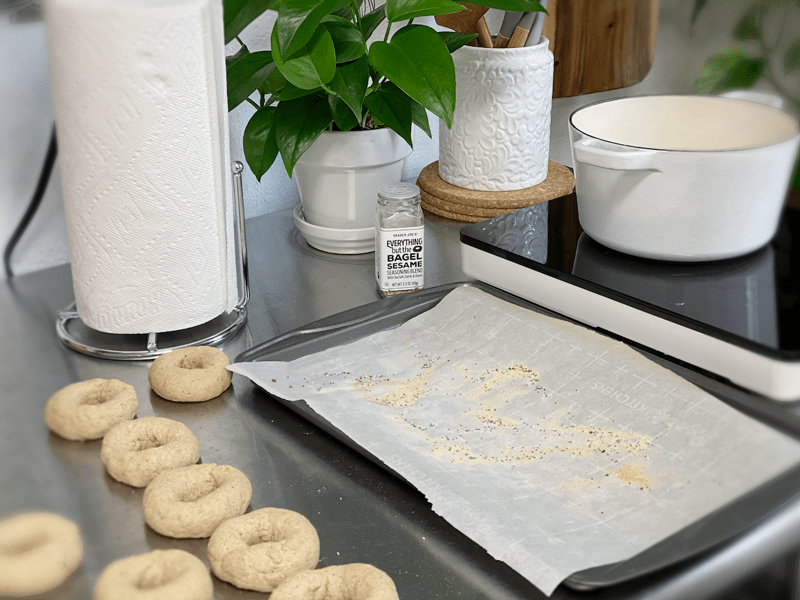
-
Have a parchment paper lined baking sheet ready. Please excuse the mess on mine. I was doing some tests on other bagels.
-
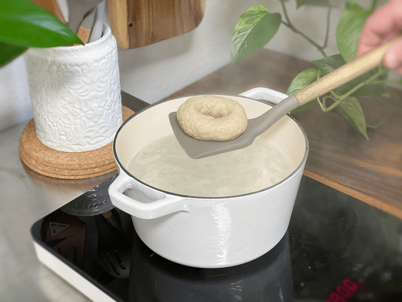
-
Gently place the bagel into the water and let it boil for 60 seconds or until it floats to the top. Remove, place on baking sheet, and add seasoning.
-
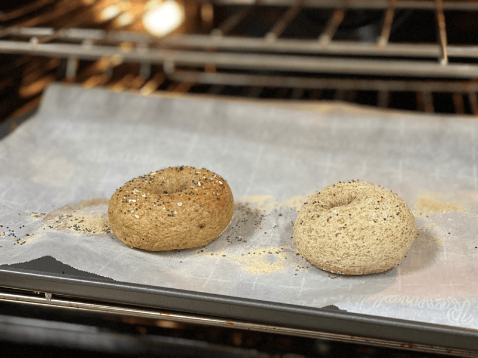
-
Here is a test run that I did. The bagel on the left was boiled and the one on the right wasn’t. There was not only a color difference, but also the texture of the crust was different.
-
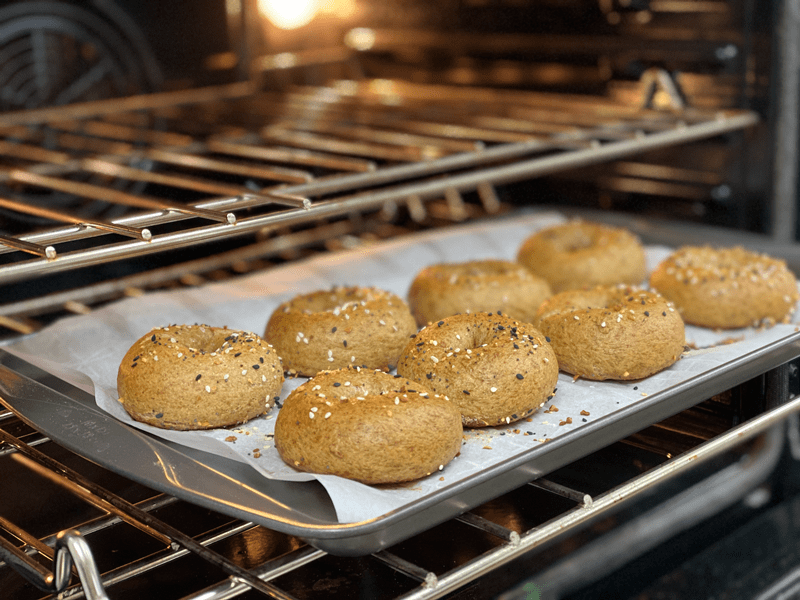
-
Bake for 30 minutes.
-
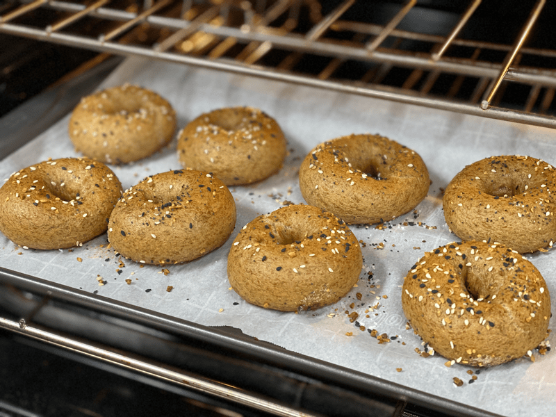
-
Beautifully golden!
-
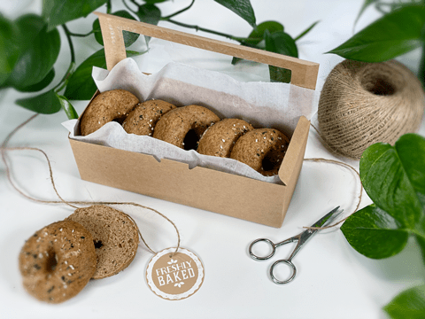
-
Here I am packaging some up for a friend of ours.
-
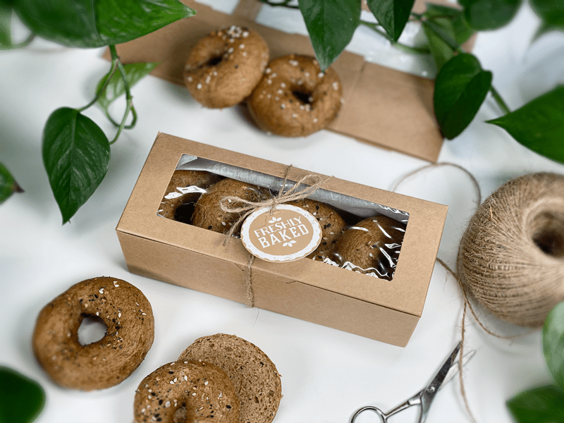
-
What a lovely gift, wouldn’t you agree?!
© AmieSue.com